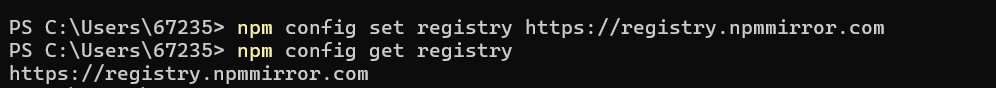
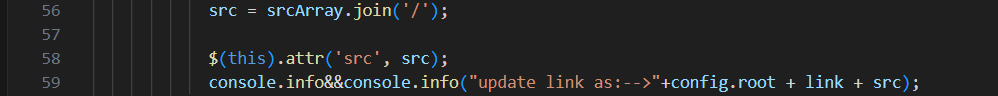

一、前言
这是博主利用Hexo框架搭建好自己的博客网站后发表的第一篇博客。整个搭建过程不算太曲折，写这篇博客既是为了纪念自己搭建的过程，也是想为他人搭建博客提供一些帮助。
二、搭建过程
1.Node.js的安装及配置
下载网址：Node.js 中文网
2024最新版Node.js下载安装及环境配置教程【保姆级】_nodejs下载-CSDN博客
博主参考了上面这篇文章来安装Node.js，前期跟着文章一步步来都没有问题，直到测试安装express模块的时候出现了问题。
1 | npm install express -g //安装express模块，-g代表全局安装 |
运行上述命令时直接卡住了，显示”sill idealTree buildDeps”。博主在网上搜索该问题的解决方法，试了好多方法，最后将镜像源更换成新的淘宝镜像源，并且要保证网络连接正常，才解决了这一问题。
参考文章：如何解决 npm install 卡在“sill idealTree buildDeps“的问题_npm sill idealtree builddeps-CSDN博客
1 | npm config set registry https://registry.npmmirror.com //更换成新的淘宝镜像源 |

之后再运行安装express模块的时候就能够正常安装了，出现了如下界面：
随后按照文章步骤安装cnpm
1 | cnpm -v |
执行上述命令查看安装是否成功时，显示”无法加载文件，因为禁止在此系统上运行脚本”
博主在网上搜索该问题的解决方法，最后按照下面这篇文章里面的步骤成功查看了cnpm的版本信息。
参考文章：cnpm : 无法加载文件 node_global\cnpm.ps1，因为在此系统上禁止运行脚本-CSDN博客
1 | set-ExecutionPolicy RemoteSigned //选择yes |
之后重新执行cnpm -v命令即可显示：
至此Node.js的安装配置就完成了！
2.Git的安装
下载网址：Git - Downloads
Git的安装相对简单，从官网下载安装即可，博主在这里就不再赘述了。
3.Hexo的安装及配置
博主按照开始的那篇文章里面的步骤一步一步来最后成功安装了Hexo，这里附上命令（以我自己的为例，在Git里面执行）
1 | cd d:\ |
按照上述命令执行后得到如下界面即为成功（忽略博主截图里的那个fatal）
1 | cd MDD_blog |
出现下图即为成功（Fluid是博主自己保存的主题，新建的博客是默认主题），将网址http://localhost:4000/粘贴到浏览器访问即可看到新搭建的博客。

到这里就恭喜大家成功搭建自己的博客啦！当然这只是完成了一大半，后面还要关联博客到Github仓库，才能实现从网页访问自己的博客。
三、关联博客到Github仓库
这一部分推荐大家看下面这篇文章，里面内容非常详细，博主也在按照步骤一步一步进行，但在配置ssh密钥时还是出现了问题。
使用Hexo搭建个人博客，绑定GitHub以及个人域名_本地的hexo服务和github绑定起来-CSDN博客
博主在配置ssh密钥的时候，要用如下命令验证配置是否成功
1 | ssh -T git@github.com |
但是输入命令后卡住了，随后显示端口22无法连接。博主在网上查了很多，经过多次尝试，终于找到了解决方法。
在.ssh文件夹中新建一个文本文档，命名为config，并去掉后缀名.txt，在该文件中添加如下内容
1 | Host github.com |
之后再运行上述命令就可以成功连接了。随后按照文章接下来的步骤即可成功关联仓库，搭建如下的博客页面了！
四、写博客文章并上传
1.撰写博客文章
相信大家在搭建好博客网页后都迫不及待的想要发表自己的第一篇文章，博主也是如此。博主用了Typora这一Markdown语言的编辑器来写文章，然而在插入图片的时候遇到了问题。博主插入本地图片后在本地可以显示，但是上传上去以后无法显示。为此，经过一番百度搜索，博主终于找到了解决方法，如下所示
1 | //在博客文件夹的_config.yml文件修改 |

1 | 插入图片名称如下： |
附文章链接关于hexo butterfly 文章内容图片加载不出来问题 | FeiFei
博主将写好的.md文件存到博客文件夹里面/source/_post文件夹下面
2.上传博客
1 | //在博客文件夹下打开命令行窗口，执行下列命令 |
这样就更新了自己的博客，大家快去试试吧！
五、结语
以上就是博主搭建博客的全过程和遇到的问题，相较于身边的人，博主遇到的问题已经算很少了。搭建完一个博客心里也是成就感满满，博主希望大家都能顺顺利利地搭建好自己喜欢的博客网页！